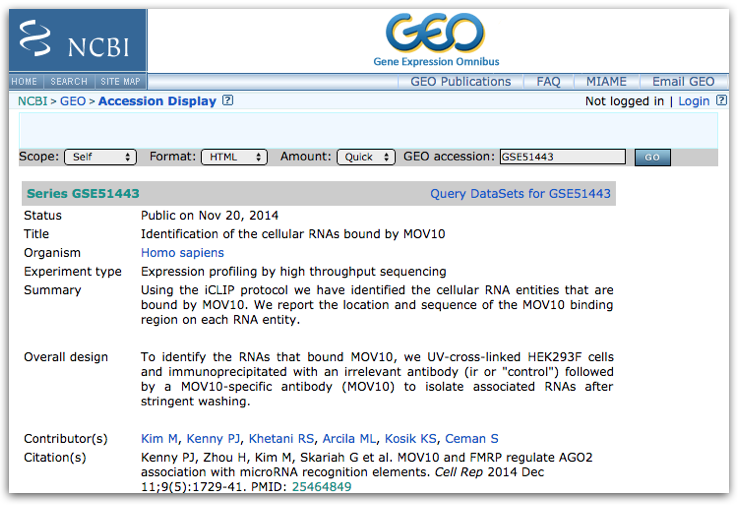
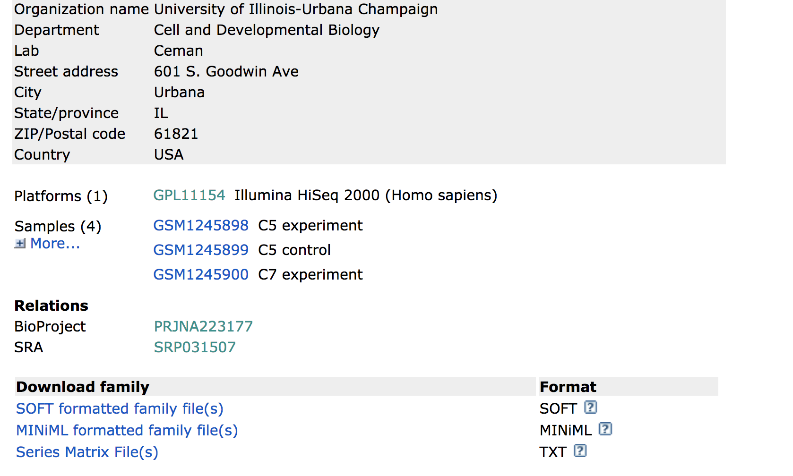
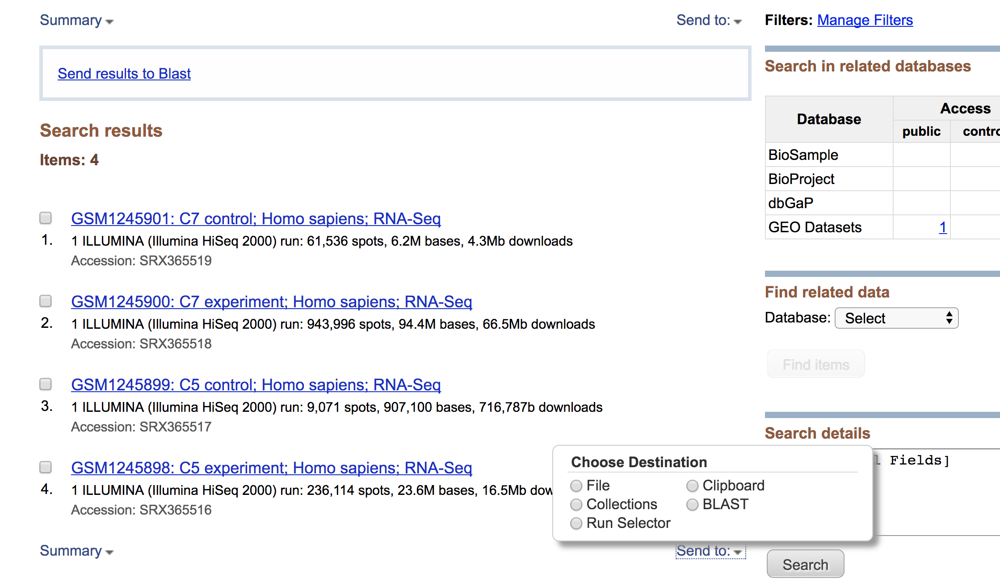
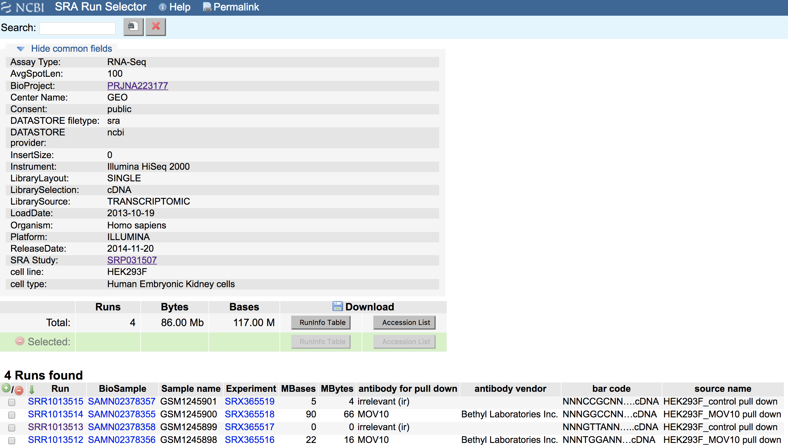
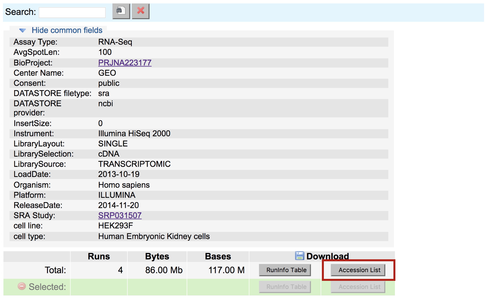

Downloading data from SRA
The Sequence Read Archive (SRA) is an archive for high throughput sequencing data, publically accessible, for the purpose of enhancing reproducibility in the scientific community.
There are four hierarchical levels of SRA entities and their accessions:
- STUDY with accessions in the form of SRP, ERP, or DRP
- SAMPLE with accessions in the form of SRS, ERS, or DRS
- EXPERIMENT with accessions in the form of SRX, ERX, or DRX
- RUN with accessions in the form of SRR, ERR, or DRR
The minimum publishable unit in the SRA, is an EXPERIMENT (SRX)

But most commonly, we find data we are interested in starting from a publication (or study) in GEO.
This time let’s use the other GEO dataset from the paper “GSE51443”, this is the one for the “Mov10 iCLIP-SEQ” dataset. Click here to access the GEO summary page for this second (smaller) dataset.

Towards the bottom of the page you will find a link for “SRA” under the heading “Relations”.

Clicking on this link takes you to a page that lists all the biological samples for the study - each with a link to their specific runs and files. If we were only interested in one sample, we could follow the relevant link and find its runs. But generally we want the files for all samples and their replicates, and to find this in one comprehensive list, we use the Run Selector. Navigate to the bottom of the page and click “send to” and select “Run Selector”, and then press “go”.

Run selector
You’ll notice that the Run Selector has aggregated all the information for the study samples, including a table of metadata at the top, giving information on:
- LibraryLayout (whether the reads were sequenced using single or paired end sequencing)
- Platform (which sequencing technology was used)
- other useful information that should be noted for downstream analysis

Below this there is also a summary line detailing the total number of runs in the study, and the option to download the RunInfoTable or Accession List, in text format. The RunInfoTable is a very useful text summary of all metadata for all runs in the study, and the Accession List is a list of all the SRR accession numbers for the study.
Also on this page is a listing of each run and the corresponding sample it came from, as well as its associated metadata. This table is useful in that each row is “clickable”, which allows you to select a subset of runs that you may be interested in. You’ll notice that clicking a subset of runs spawns a new download option - a RunInfoTable & Accession List that is only relevant to your chosen subset.

Download the Accession list for the data you are interested in to your desktop (everything included by default). Copy the contents of this downloaded file to a new file on the cluster using the following commands:
$ cd /n/scratch3/$USER/
$ mkdir -p mov10_rnaseq_project/data/GSE51443 # make a new set of directories
$ cd mov10_rnaseq_project/data/GSE51443 # change to that directory
$ vim SRR_Acc_List_GSE51443.txt # paste into this new file and save
NOTE: Instead of copying and pasting you can also use
scpto copy over the downloaded file to the cluster.$ scp /path/on/your/computer/to/SRR_Acc_List_GSE51443.txt username@hms.harvard.edu:/n/scratch3/$USER/During download, in addition to writing the fastq files, SRA-toolkit writes additional cache files, which are automatically directed to your home directory by default, even if you are working elsewhere. Because of this, we need to write a short configuration file to tell SRA-toolkit to write its cache files to the scratch space, instead of our home, to avoid running out of storage.
# navigate to your scratch space
cd /n/scratch3/$USER/
# make a directory for ncbi configuration settings
mkdir -p ~/.ncbi
# write configuration file with a line that redirects the cache
echo '/repository/user/main/public/root = "/n/scratch3/$USER/sra-cache"' > ~/.ncbi/user-settings.mkfg
Now we have what we need to run a fastq-dump for all of the SRRs we want.
Downloading a single SRR
Given one single SRR, it is possible to convert that directly to a fastq file on the server, using SRA toolkit which is a toolkit created by NCBI. This should be already downloaded and installed on most clusters used for biomedical purposes.
$ module load sratoolkit/2.9.0
## The fastq-dump command will only download the fastq version of the SRR, given the SRR number and an internet connection
$ fastq-dump SRR1013512
Parallelizing the SRR download of multiple FASTQ files
Downloading individual SRRs can become painful if the experiment you are downloading has loads of SRRs. Unfortunately, the SRA-toolkit doesn’t have its own methods for downloading multiple SRR files at once; so, we’ve written two scripts to help you do this efficiently in parallel. Note that we will be walking through these scripts and not demoing them in class.
The first script contains the command to do a fastq dump on a given SRR number, where the SRR variable is given using a positional parameter. You can learn more about positional parameters here.
$ vim inner_script.slurm
#!/bin/bash
#SBATCH -t 0-10:00 # Runtime - asking for 10 hours
#SBATCH -p short # Partition (queue) - asking for short queue
#SBATCH -J sra_download # Job name
#SBATCH -o run.o # Standard out
#SBATCH -e run.e # Standard error
#SBATCH -c 1
#SBATCH --mem 8G # Memory needed per core
module load sratoolkit/2.9.0
# for single end reads only
fastq-dump $1
# for paired end reads only
# fastq-dump --split-3 $1
NOTE: Downloading Paired End Data: Unlike the standard format for paired end data, where we normally find two fastq files labeled as
sample1_001.fastqandsample1_002.fastq, SRR files can be very misleading in that even paired end reads are found in one single file, with sequence pairs concatenated alongside each other. Because of this format, paired files need to be split down the middle at the download step.SRA toolkit has an option for this called
--split-files. By using this, one single SRR file will download asSRRxxx_1.fastqandSRRxxx_2.fastq.Furthermore, there is a helpful improvement for this option called
--split-3, which splits your SRR into 3 files: one for read 1, one for read 2, and one for any orphan reads (ie: reads that aren’t present in both files). This is important for downstream analysis, as some aligners require your paired reads to be in sync (ie: present in each file at the same line number) and orphan reads can throw this order off.
The second script is a shell script and loops through our list of SRRs. Inside the loop it calls the first script, passing it the next SRR in the list.
$ vim sra_fqdump.sh
#!/bin/bash
# for every SRR in the list of SRRs file
for srr in $(cat SRR_Acc_List_GSE51443.txt)
do
# call the bash script that does the fastq dump, passing it the SRR number next in file
sbatch inner_script.slurm $srr
sleep 1 # wait 1 second between each job submission
done
In this way we will start a new job for each SRR download, and download all the files at once in parallel – much quicker than if we had to wait for each one to run sequentially.
To run the second script we use:
# DO NOT RUN
$ sh sra_fqdump.sh
NOTE: SRRs from Multiple Studies: Sometimes, in a publication, the relevant samples under study are given as sample numbers (GSM numbers), not SRRs, and sometimes belong to different GEO datasets (eg: different parts of a series, or separate studies for case and control experiments/data). If this is the case, download the RunInfoTables for each of the relevant studies as shown, selecting only the relevant GSMs/SRRs in the table before download, and copy them into one file. The starting point for the parallel fastq dump is a list of SRRs - so it does not matter if they came from different studies.
This lesson has been developed by members of the teaching team at the Harvard Chan Bioinformatics Core (HBC). These are open access materials distributed under the terms of the Creative Commons Attribution license (CC BY 4.0), which permits unrestricted use, distribution, and reproduction in any medium, provided the original author and source are credited.